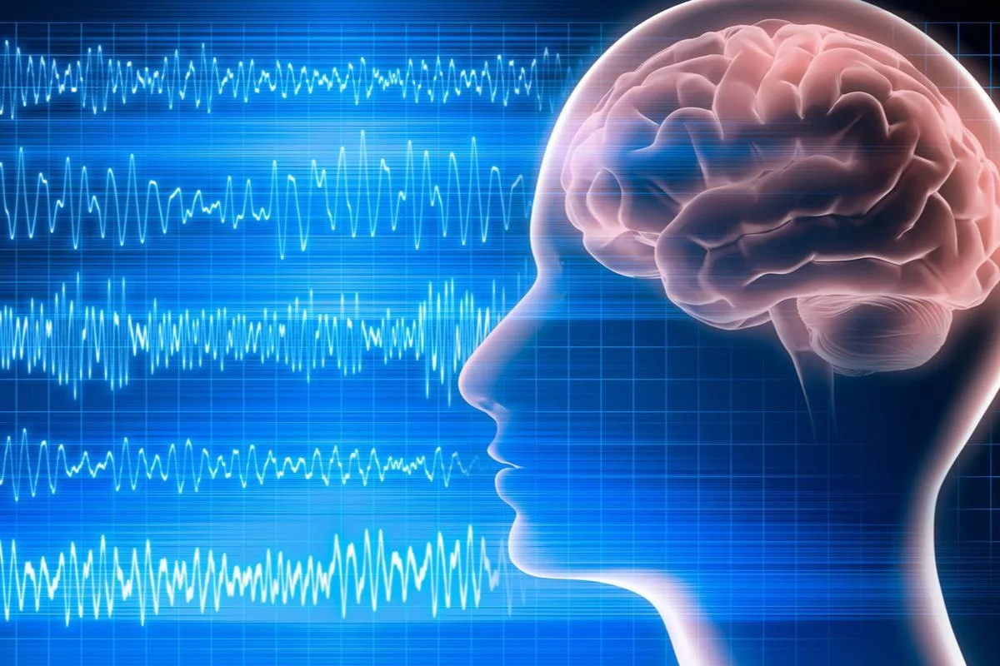
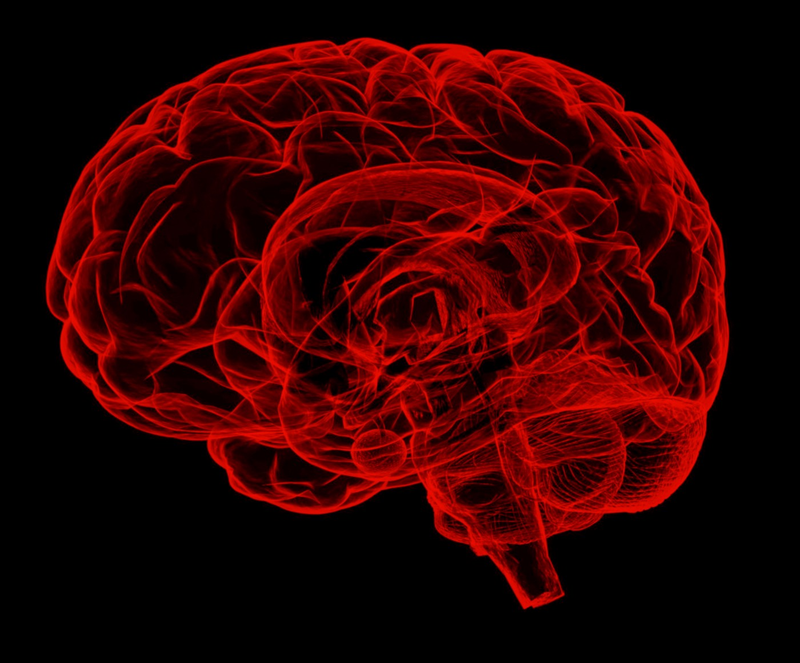

A novel sensing device to record EEG from inside the ear

EEG is a non-invasive method for recording electrical brain activity.
Electricity is the natural language of the brain so EEG provides a natural way to interface with computers.
The golden standard uses a gel-filled electrode cap, but it's impractical for everyday use due to messy gel, short time window for recording, and user discomfort.
Luckily, we can record EEG directly from the ear. This is a more accessible and practical way to record brain activity on for long-term, daily monitoring.
We can implement an wearable BCI to capture cognitive signals recorded from the ear.
Internet of Things BCI
Using object detection and motor imagery to control various devices
Object detection is a computer vision technique that identifies and locates objects within an image or video. In the context of IoT devices, object detection can be used to select a device that the user wants to interact with. Motor Imagery EEG is a technology that detects the user's intention to perform a specific movement, such as grasping an object or moving a limb, by measuring electrical activity in the brain. By combining object detection with motor imagery EEG, users can select and control an IoT device through their thoughts. For example, a user could use object detection to select a smart light bulb and then use motor imagery EEG to turn it on or off without physically interacting with a switch or button.
Brain Stimulation Headband
A non-invasive neuromodulation device to improve cognitive function using infrared LEDs

Photobiomodulation is the application of near-infrared light to promote healing, decrease pain, and restore cellular energy balance. When this light shines on the brain, it can improve cognitive and emotional function. This is usually done with an expensive laser that requires special training, making it inconveneint for most people to use. This project is an attempt to provide a low cost, alternative, portable, and safe light therapy device.